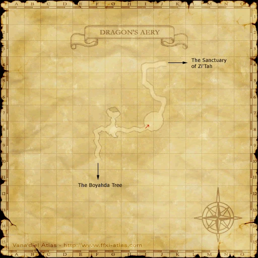
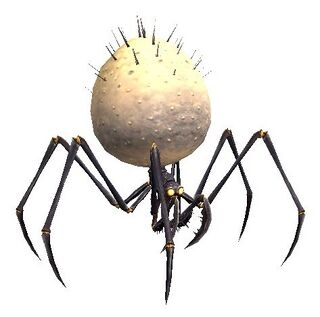
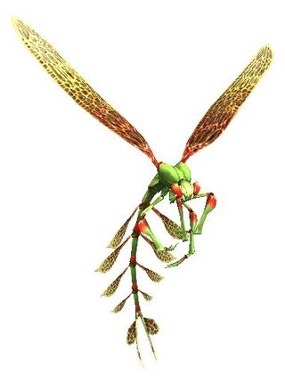
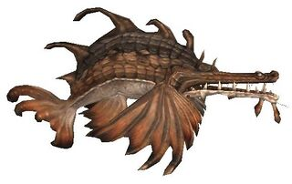
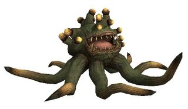

Description
Dragon's Aery is a dungeon in Li'Telor.
Map

Involved in Quests / Missions
| Quest / Mission | Type | Starter | Location |
|---|---|---|---|
| Beat Around the Bushin | General | Vola | Lower Jeuno (J-8) |
| Excalibur | Relic Weapon | --- | --- |
Notorious Monsters


Regular Monsters
| Name | Level | Drops | Steal | Family | Spawns | Notes |
|---|---|---|---|---|---|---|
| Bark Tarantula | 77-80 | Spider Web | Spider Web |  SpidersImage source | 21 | A, L, H |
| Darter | 77-79 | Insect Wing | — |  FliesImage source | 11 | L, H |
| Demonic Pugil | 70-78 | — | — |  PugilsImage source | 1 | Fished up; A, H |
| Demonic Rose | 76-79 | Malboro Vine Lacquer Tree Log | Malboro Vine |  MorbolsImage source | 1 | A, H |


References
External references describe their own server or retail rules. Documented Zenith changes take precedence.
Map credits: Map 1 — HorizonXI Wiki. Original game maps © SQUARE ENIX; redrawn maps retain the credited authorship and license.

Additional level-75 reference

|
Nestled high above the the peaceful tree-lined areas of The Boyahda Tree and The Sanctuary of Zi'Tah lies this trecherous plot of land home to some of the strongest creatures to roam Vana'diel. The aery, or nest, while home to some more common animals, is often guarded by one of two powerful Wyrms. |
Connecting Areas
Involved in Quests/Missions
| Quest | Type | Starter | Location |
| Beat Around the Bushin | General | Vola | Lower Jeuno (J-8) |
| Excalibur Relic Upgrade | Relic Weapon | --- | --- |
Fishing


Notorious Monsters Found Here
|
Name |
Level |
Drops |
Steal |
Family |
Spawns |
Notes | |||||||
| Fafnir (NM) | 88-90 | Wyrm | 1 | A, T(S) | |||||||||
| Nidhogg (NM) | 90 | Wyrm | 1 | A, T(S) | |||||||||
|
HP = Detects Low HP; M = Detects Magic; Sc = Follows by Scent; T(S) = True-sight; T(H) = True-hearing JA = Detects job abilities; WS = Detects weaponskills; Z(D) = Asleep in Daytime; Z(N) = Asleep at Nighttime | |||||||||||||
Mobs Found Here
|
Name |
Level |
Drops |
Steal |
Family |
Spawns |
Notes | |||||||
| Bark Tarantula | 77 - 80 | Spider Web | Spider Web | Spiders | A, L, H | ||||||||
| Darter | 77 - 79 | Fly | L, H | ||||||||||
| Demonic Pugil | 70 - 78 | Pugil | Fishing | A, H | |||||||||
| Demonic Rose | 76 - 79 | Morbol | A, H | ||||||||||
|
HP = Detects Low HP; M = Detects Magic; Sc = Follows by Scent; T(S) = True-sight; T(H) = True-hearing JA = Detects job abilities; WS = Detects weaponskills; Z(D) = Asleep in Daytime; Z(N) = Asleep at Nighttime | |||||||||||||
Adapted from Eden Wiki: Dragon's Aery · Contributors and history · CC BY-SA 4.0. Revision 45896. Layout, links and optional background text adapted for Zenith.